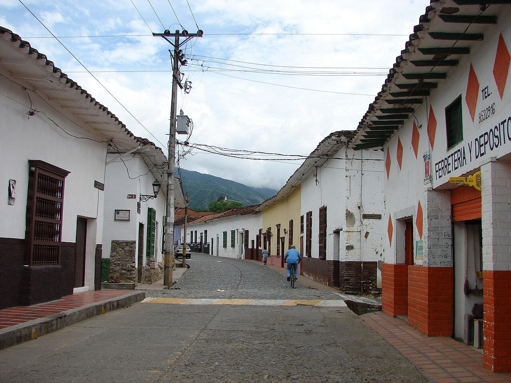
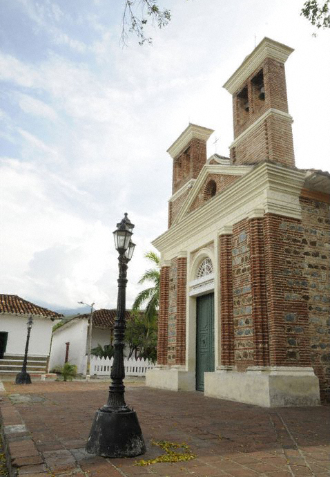
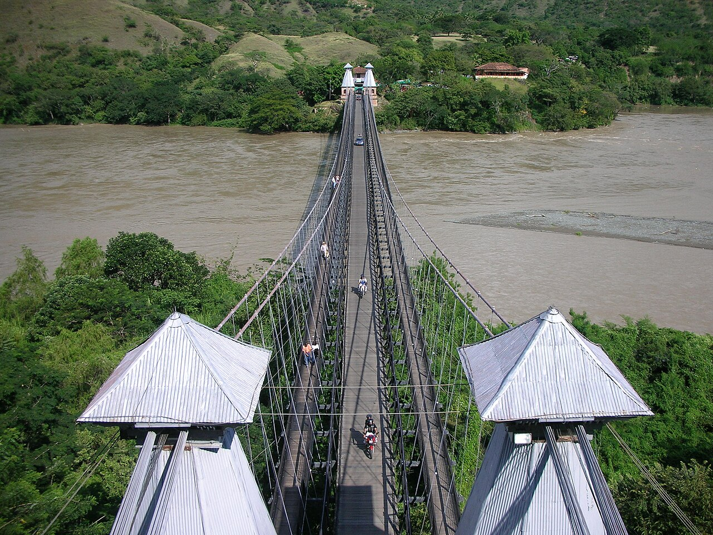

Historic centre
Walk through its streets, squares and traditional facades.
Find on the map ↗West · Antioquia, Colombia
Cobbled streets, courtyards and churches in western Antioquia.
What to see ↗Discover its history ↓
Do you have a business in Santa Fe de Antioquia? Leave your details to take part ↗
Discover the destination
Antioquia’s former capital preserves a historic centre with colonial and republican heritage. Its houses, churches and the Puente de Occidente reveal different chapters of the region’s history.

Ideas for your visit
Choose the places that spark your curiosity and plan your route at your own pace.
Walk through its streets, squares and traditional facades.
Find on the map ↗A stop to discover the centre’s religious heritage.
Find on the map ↗
03The bridge links Santa Fe and Olaya across the Cauca River.
Find on the map ↗Images resized; framing may vary by screen. Photographs licensed under CC BY-SA retain that license.
Connect the parts of your trip
Find how to get around, where to stay and eat, things to do and the services you need. Explore at your own pace.
Find Santa Fe de Antioquia on the map ↗
There are no places published in this directory yet.
Locate the places you want to visit and check their opening hours, entry conditions and accessibility before planning your route.
Find Santa Fe de Antioquia on the map ↗There are no upcoming events published.
Organising an event? Let’s talk ↗Join Explorando Lugares
Be part of it.
Whether you run a hotel, restaurant, bar or shop, provide transport or organise tours and activities, we would like to hear about your business.
Leave your contact details. We will get in touch to discuss featuring your business on the portal.
I want to take part ↗